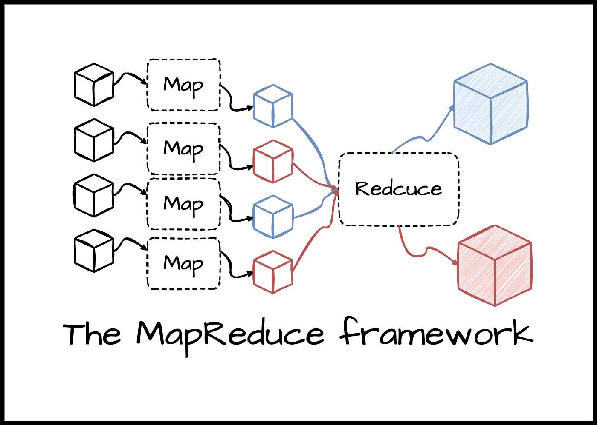

My Projects
def bubbleSort(A):
F = len(A)
for i in range(F - 1):
for j in range(0, F - 1 - i):
if A[j] > A[j+1]:
A[j], A[j+1] = A[j+1], A[j]
Bubble Sort Algorithm
This project demonstrates the Bubble Sort algorithm running from an external Python file using PyScript.
Bubble Sort Result:
Final output below

MapReduce
This project was written in GO and works to divide up work for processing large datasets in parallel across many different machines then combining all of those machines outputs into a single output
View on GitHubMusical Score Project
This C++ project involved constructing instruments from waveforms and being able to read and write sheet music for those instruments to play.
View on GitHub